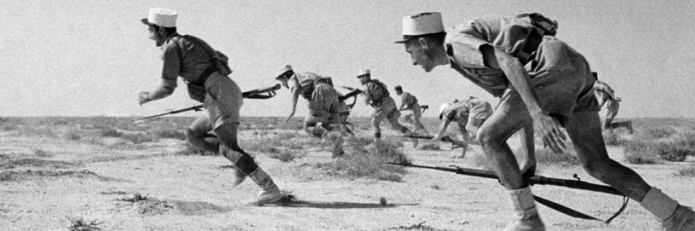

La Rue de Bir Hakeim
La bataille de Bir Hakeim rappelle le combat acharné de la Résistance. La 1re Brigade française Libre composée de 3 700 hommes impose d’importantes pertes aux 37 000 soldats des Deutsches Afrikakorps et Corpo d’armata. On compte par exemple 170 morts pour la BFL contre 3 300 blessés, tués ou disparus pour les forces nazies.
